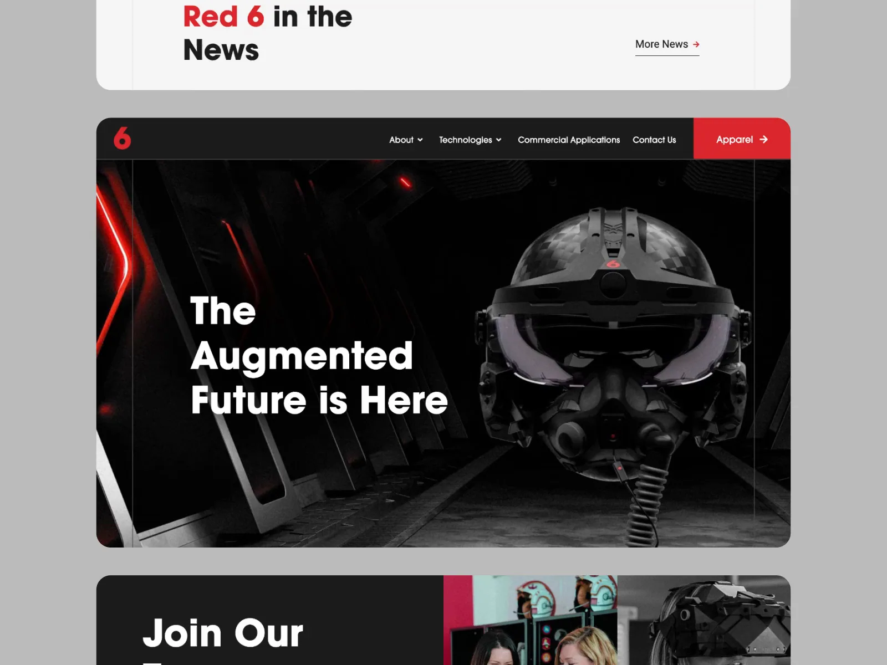
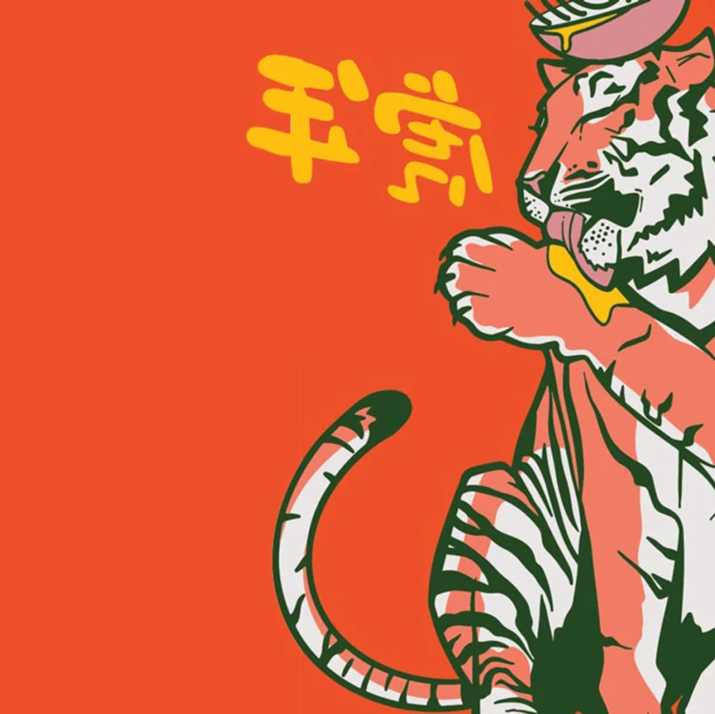
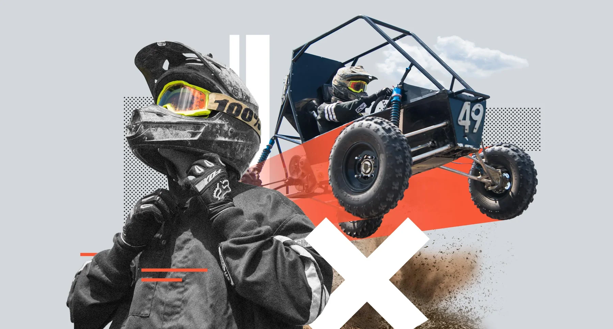
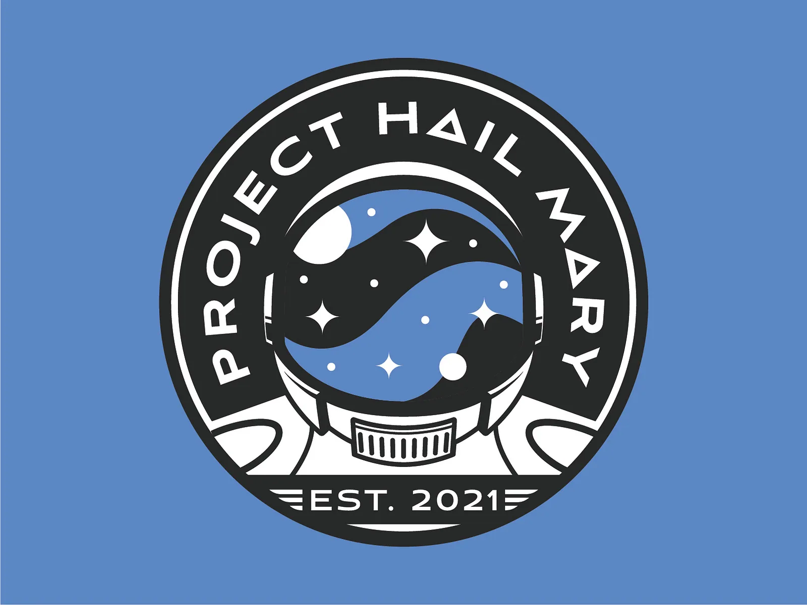
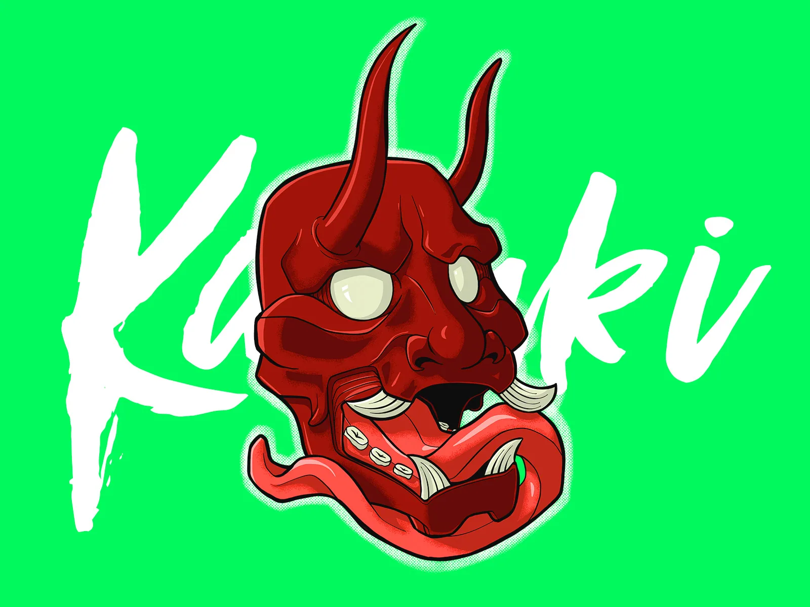
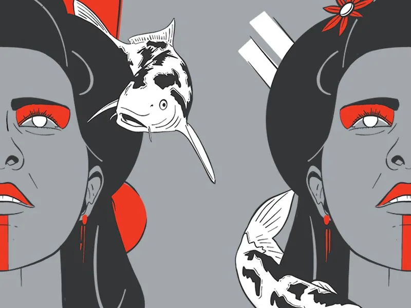
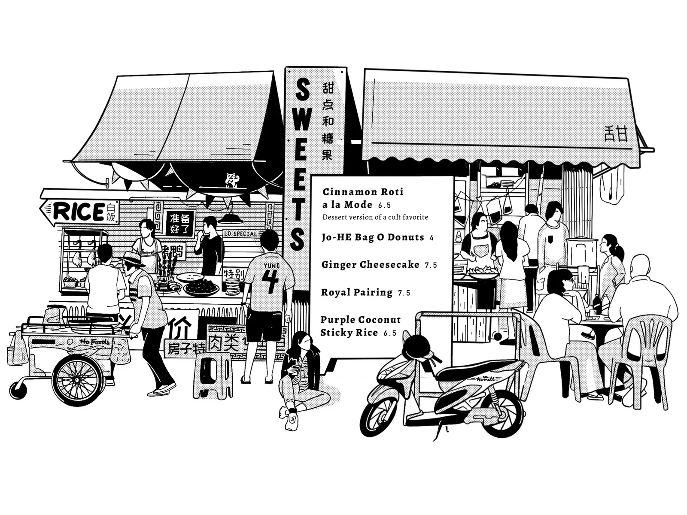

Creative director and product designer in Orlando. Currently a senior product designer at Disney, with a decade of brand and web work behind it.
Adam
Smajstrla
 Asbestos.comProduct design
Asbestos.comProduct design
Red 6 ARProduct design
Hawkers brandingBrand identity and creative direction
UCF brandingEnvironmental and print design
Project Hail Mary patchPatch
Kabuki maskIllustration Nice Buns neonNeon sign
Nice Buns neonNeon sign
Geisha and koiIllustration Spicy Smile neon signNeon sign
Spicy Smile neon signNeon sign
Streets of AsiaIllustration